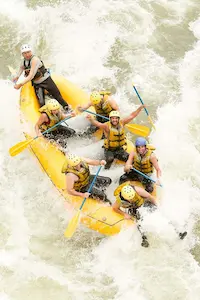

Our Rafting Adventures
🎯 Purpose To create safe, thrilling, and memorable river adventures that allow people to connect with nature, challenge themselves, and build lasting bonds with others, while also promoting environmental stewardship and supporting local communities through sustainable tourism practices.